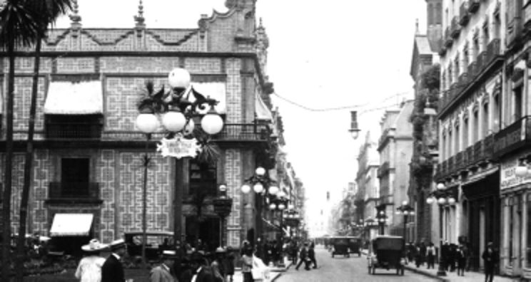

Espacio público rescatado o intervenido: se refiere a un espacio público que presentaba deterioro físico, abandono o inseguridad y que al ser intervenido con obras de mejoramiento físico y acciones para la participación social y la seguridad comunitaria, desarrolla condiciones físicas y sociales que son favorables.
Martes 30 de diciembre de 2014
DIARIO OFICIAL DE LA FEDERACIÓN

El abandono progresivo de zonas habitacionales en los centros urbanos, conjuntamente a la necesidad de mayores recursos para lograr satisfacer las necesidades en espacios suburbanos, han desencadenado por el crecimiento de las ciudades de forma periférica, en la reducción de la concentración de la población y densificación en sus áreas centrales.
Por lo que, en respuesta a este contexto se necesitan acciones para promover la re-densificación y compactación de las ciudades, además de ofrecer calles incluyentes y seguras para todos sus usuarios, de esa forma lograr las condiciones necesarias para que la movilidad urbana, genere mejor calidad de vida para sus ocupantes dotándolos de una mejor infraestructura y servicios urbanos..
El Programa Sectorial de Desarrollo Agrario, Territorial y Urbano del Gobierno Federal, considera en su objetivo 3 “Consolidar ciudades compactas, productivas, competitivas, incluyentes y sustentables, que faciliten la movilidad y eleven la calidad de vida de sus habitantes.” La estrategia 3.3. “Promover la mejora de la infraestructura, equipamiento, servicios, espacios y movilidad en coordinación con gobiernos estatales y municipales.” Y la línea de acción 5 “Fortalecer el tejido social y la seguridad de las comunidades mediante el rescate de espacios públicos en condiciones de deterioro o abandono”.
Estos objetivos se han materializado en rescates de espacios públicos, de los cuales la peatonalización y regeneración de la calle Francisco I Madero en la Ciudad de México nos ejemplifica estrategias exitosas de como aplicar estas acciones para formar sentido de pertenencia no solo en sus usuarios si no en los visitantes a la Ciudad.(1)
Conforme transcurre la vida de las ciudades, van permaneciendo edificaciones que marcan la historia y la memoria de lo ocurrido en los lugares donde se encuentran, es por eso, que debemos conservarlos y cuidarlos para estar relacionados, ya que nos cuentan la historia de nuestra vida personal y comunitaria; además son la base de la cultura actual y la identidad de una ciudad.
La calle Madero es una de las calles más antiguas e importantes de la ciudad, desde tiempos anteriores ha presenciado un sinfín de acontecimientos que han marcado parte de la historia de la ciudad y del país, desde los desfiles realizados por personajes históricos importantes de la historia de México, así como ha sido testigo de diferentes expresiones sociales y políticas. Además ha sido uno de los principales conectores entre dos lugares muy importantes del Centro Histórico, el Zócalo y la Alameda Central.
Hoy en día, es cuna de diferentes comercios los cuales se han beneficiado de esta privilegiada ubicación, ya que, al caminar por ella podemos encontrar diferentes negocios que han sostenido la economía del lugar, desde reconocidos restaurantes, grandes hoteles, joyerías, cafés, hasta museos y tiendas de ropa de moda, lo que ofrece al paseante una diversidad comercial al caminar por el lugar. Además de que cuenta con muchas edificaciones con gran valor arquitectónico.
El proyecto de regeneración de la Calle Madero se da por la necesidad de los transeúntes que recorren la calle a diario en la Ciudad, con todas las diferentes actividades que se realizan en el lugar; a partir de lo cual el Gobierno, se generó el proyecto para mejorar la experiencia urbana; así como mejorar la calidad de vida de los que recorren el centro de la Ciudad de México. Uno de los principales objetivos es el de llevar la experiencia de caminar por las calles de la ciudad de forma placentera además de fomentar las interacciones entre las personas, apreciar el arte y las formas arquitectónicas del lugar; ya que el flujo vehicular había mermado la visibilidad de su valor físico y arquitectónico, lo que provocaba la poca apreciación del mismo, además del riesgo que propiciaban a los peatones.
Por lo anterior en el año 2009 se dio la iniciativa de realizar dicho proyecto con impulso de la conmemoración del día del peatón, que formaba parte del rescate de este eje olvidado.
En base a las modalidades previstas en las reglas de operación del programa federal Rescate de Espacios Públicos 2015 (2) respecto a el mejoramiento físico de los espacios públicos, se prevé la construcción, ampliación, habilitación o rehabilitación de los espacios públicos de uso comunitario con sentido de equidad e inclusión laboral, que se refleja en hacer peatonal la zona, lo cual es el caso del Corredor Peatonal Madero la cual,es una de las calles más transitadas. (3)
El programa previó el cierre de la calle para que los peatones pudieran recorrer estos espacios de calidad y fueran incluyentes para la sociedad, el cual comenzó de forma progresiva ya que al principio se comenzó con la clausura solo los fines de semana, lo que hacía que los habitantes, locatarios, trabajadores y peatones se adaptaran al cambio, y así poder disfrutar de los beneficios que traería consigo el proceso, considerando que el éxito del mismo dependía de la apropiación del proyecto por tanto del consentimiento de sus habitantes. Conjuntamente, se realizó permitiendo el paso solo a algunos vehículos para el abastecimiento de los locales que se encuentran en la zona.
La segunda acción fue la construcción y mejoramiento del alumbrado público deficiente o inexistente en la área, en la cual se sustituyó alrededor de 100 lamparas modelo 1900 por lámparas especiales, que generó una calle iluminada, especialmente para el peatón y no para el automóvil, lo cual propla vida nocturna en un entorno. seguro
Cabe destacar que el alumbrado público fue acorde a la arquitectura de forma imponente para su apreciación.
La rehabilitación del mobiliario urbano para el correcto funcionamiento del espacio, forma también parte del proyecto, por lo cual se implementaron diferentes equipamientos para la comodidad y servicio de los usuarios desde luminaria propia para sus corredores, bancas, así como los necesarios botes de basura; las fachadas, así como la colocación de piezas de mármol.
Se cuenta con un sistema de bolardos retractiles para el paso permitido a vehículos de seguridad y emergencia para garantizar la acción inmediata a problemas que se presenten. Además de contar con reductores de velocidad en los cruces.
Por último, el mejoramiento de los accesos haciéndolos seguros para los peatones y ciclistas por medio del mejoramiento y dotación de señalética y semáforos en los cruces, además de el cierre de la calle para la comodidad de los transeúntes, los cuales transitan sin ninguna clase de peligro ni obstáculos que permitan disfrutar su trayecto, además de contar con diferentes comercios para poder satisfacer sus necesidades, desde ir a comprar ropa, descansar o comer un helado, lo que hace de éste recorrido una gran experiencia.
Se invita a la gente a participar en diferentes actividades no solo comerciales si no también físicas para los corredores, y culturales, en las cuales los diferentes artistas urbanos que interpretan personajes como magos, malabaristas o estatuas vivientes invaden la calle, los visitantes pueden ir a ver diferentes danzas, escuchar música, disfrutar del teatro y cine para que, desde jóvenes hasta adultos mayores pueden encontrar actividades para ellos, lo cual mezclado con el entorno arquitectónico renovadogenera la posibilidad a la sociedad de apropiarse de este espacio.
Actualmente transitan la zona, en promedio, 120 mil personas a diario y los fines de semana 200 mil de acuerdo a Felipe Leal (4). Esto muestra el éxito, de proyectos basados en las necesidades de la población, además de fomentar el desarrollo económico y social de la zona ya de por si transitada y comercial, detonando su potencial con simples acciones.
La respuesta ciudadana es algo que todo proyecto debe de contemplar para saber si el proyecto será benéfico para la sociedad, lo cual en este caso se ha manifestado a través de redes sociales mediante comentarios positivos sobre el corredor.
El rescate del Corredor Madero nos invita a todos los ciudadanos a la reflexión, el análisis y la aplicación de acciones que han mostrado su efectividad; como en este espacio tan importante para la Ciudad de México y del cual tenemos mucho que aprender.